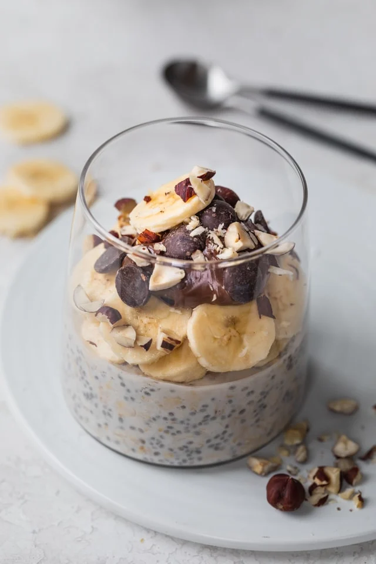

Overnight Oats

Easy Overnight Oats
This easy overnight oats recipe is a healthy simple breakfast that you can make ahead for busy mornings and customize with many add-ins and toppings!
Ingredients
- ½ cup rolled oats
- ½ cup milk of choice
- ¼ cup non-fat Greek yogurt
- 1 tablespoon chia seeds
- 1 tablespoon sweetener honey or maple syrup
- ¼ teaspoon vanilla extract
Steps
- Place all ingredients into a large glass container and mix until combined.
- Cover the glass container with a lid or plastic wrap. Place in the refrigerator for at least 2 hours or overnight. Toppings can be added the night before or immediately before serving.
- Uncover and enjoy from the glass container the next day. Thin with a little more milk or water, if desired.